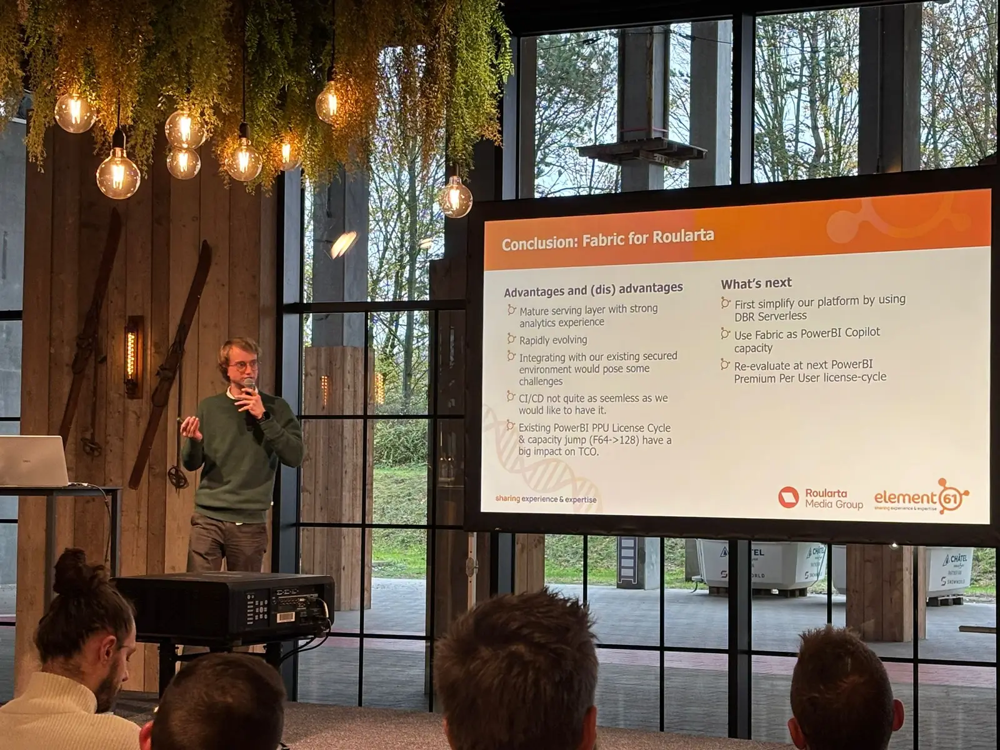

Blue Slope
Real-world cases for real Belgian teams
The Blue Slope is where Belgian companies share what they actually built on Fabric: what worked, what broke, what they'd do differently. Comfortable pace, deep on outcomes, light on slideware.
- 08:45 - 17:00
- Blue Slope room
- For Fabric users

Schedule
Friday 4 December 2026 · Blue Slope room
These sessions are confirmed. The running order and times will follow soon.
-
15 min
Opening & welcome, speaker to be announced · Track host
-
Time TBC45 min
How do you migrate reporting you didn't build? An Estonian media house on Fabric
A practical method for migrating Qlik reporting to Fabric and Power BI, reconciling Customer 360 data, strengthening data layers, and safely using AI across a Git-based development workflow.
Pieter Jansen
More info
Äripäev is Estonia's business media house. Subscriptions, events, training, advertising, each running in its own system, each holding its own version of the same customer. Reporting ran on Qlik. The job was to move it onto Microsoft Fabric and Power BI with a small team working part-time, alongside everything else the business needed.
The hard part is rarely the visuals. It is deciding what to migrate and in what order, working out what each report actually depends on, and reconciling a customer who exists in several source systems under several keys before any of it can land in a semantic model.
This session is the method: how we inventoried the Qlik estate and sequenced it against Gold layer readiness, how the mapping tables and the Customer 360 build came out of that, how we filled the Silver and Bronze gaps the reports exposed, and how we validated the migrated reports against the originals.
The second half is AI. Fabric development moved into a Git repo, and with it the documentation, the architecture rules and the standards the team had never written down. That turned out to be the prerequisite: an assistant working across the repo is only as good as what you have made explicit. I'll show the setup, where it genuinely accelerates migration work, where it confidently gets things wrong, and the guardrails we put around it before letting it near anything that writes.
-
Time TBC45 min
Migrating without breaking the business: lessons from ZLM's Fabric journey
ZLM verzekeringen's migration from Oracle and Qlik Sense to Microsoft Fabric highlights implementation trade-offs, user adoption, and data governance.
Koen Graat
More info
ZLM verzekeringen is a regional non-profit insurance company headquartered in Goes Netherlands. It is the largest car insurer in the south of the Netherlands. In 2026 ZLM started a significant transformation of their data landscape, moving from an on-premises Oracle warehouse + Qlik Sense to a full Fabric platform. ZLM went for a full-fledged Fabric implementation including Fabric Data Factory, dbt, Fabric warehouses, notebooks, Purview and Power BI. Very recently we also introduced the recently announced Rayfin apps.
It is not easy to take a company where Excel is often the default choice to the next level. Especially while keeping end-users in mind by not altering the business processes too much. In this session we will discuss the process of moving from zero to production, how the business responded to this new platform, the trade-offs we had to make while implementing, and the importance of data governance.
-
Time TBC45 min
Goodbye low-code? Rebuilding an ESG data portal as a Fabric App
A comparison of rebuilding an ESG data portal as a Fabric App, covering data integration, business rules, access control, deployment, ownership, and development cost versus Power Apps.
Marthe Spriet & Loïc Barbe
More info
Not every number comes from a source system. For ESG reporting at a real-estate group, someone still has to maintain energy contracts, meters and the grouping of buildings. We built that portal in Power Apps, together with the business: delivered fast, but rigid in layout and interaction.
So we are rebuilding it as a Fabric App and asking out loud: can Fabric Apps become a viable alternative to Power Apps when business users own the data?
Six things decide it. How the app reads master data from the Warehouse and writes input back. Where business rules and validation live without the low-code form. What each user may see and edit, and where data can leak. How people find and reach the app. How it ships, and who owns it afterwards. And development time: low-code won on speed, but AI assisted development is closing that gap, so what does production-ready cost on top of a demo?
We show what we built, what is not good enough yet, and when we would still pick Power Apps.
-
Time TBC45 min
Can I swim here? How Stad Brugge and Sirus turn Blue and Green data into trusted decisions
Blue4Green combines urban blue and green data in Microsoft Fabric, using swimming-water quality to demonstrate governed pipelines, dashboards, and trusted decisions.
Bram Verdonck
More info
How do you turn a complex urban climate programme into information that both city workers and citizens can use? Blue4Green brings together blue and green data, from water quality, groundwater, rainfall, sewer overflows, and water use to urban trees, green space, and heat stress, in Microsoft Fabric. Stad Brugge and Sirus are building a shared data platform, a policy dashboard for city teams, and a citizen dashboard for clear public communication.
Rather than touring every dataset, project lead Astrid Stroobant and the Sirus and Urban Sense technical team use one critical case, swimming-water quality, to reveal the full solution. We combine sensors, Bruges' city lab and VMM samples, and scraped public algae and swimming information, then trace them through metadata-driven pipelines, a medallion architecture, dbt, Direct Lake, and Power BI. A live demo connects platform engineering, policy decisions, and citizen trust, with reusable lessons on multi-partner data, governance, provenance, and communication.
-
Time TBC45 min
Our Market Share Journey to Fabric: Turning Fragmented Data into One Platform
ECO3's field story of migrating market-share analytics from SAP BW, spreadsheets, and external data sources to a governed Microsoft Fabric platform.
Terence Hsu
More info
ECO3 had already started adopting Microsoft Fabric, but its global market-share analytics solution presented a different challenge: migrating business-critical reporting from SAP BW, spreadsheets, external market data providers, and fragmented datasets into one governed platform.
In this session, we share how the team developed and began implementing a migration blueprint aligned with ECO3's broader Fabric direction. We will explore the business problem, the target architecture, the decisions behind the selected Fabric components, and the project's progress so far.
This is an honest field story about what has worked, what has proved more difficult than expected, and how the blueprint has evolved during implementation. Attendees will leave with practical lessons and a reusable approach for structuring their own migration to Microsoft Fabric.
-
Time TBC45 min
To be announced · Customer + partner
-
Time TBC45 min
To be announced · Customer + partner
Tickets are released in three waves: the earlier you book, the less you pay.
Get tickets